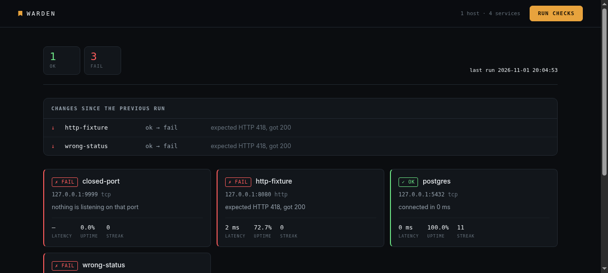

01The question I kept asking
Every few weeks: what is actually running in the lab right now? The answer was a mix of memory, a bookmark folder, and a markdown table that was accurate in March. Each time, I rebuilt the list by hand, forgot one thing, and found out about the omission later.
The failure is not a lack of monitoring. It is that the inventory lives nowhere authoritative. Uptime dashboards tell you a service you already listed is down — they never tell you that you forgot a service, or that one changed its certificate at 3am.
02One file, and it is the truth
Warden starts from a single warden.toml. Hosts first, then
services that reference them by name — never by address, so a re-IP is one
edit rather than six.
[[host]] name = "nas" address = "10.10.10.20" tags = ["storage"] [[service]] name = "smb" host = "nas" port = 445 check = "tcp"
Parsing is strict on purpose. A service pointing at a host that does not exist is a refusal, not a silently unwatched service — that is how you end up with a green dashboard covering three of your four VMs. Duplicate names, out-of-range ports and unknown check types fail the same way, with the reason stated.
03Checks that do not overstate themselves
Four check types: a TCP connect, an HTTP GET, the same over TLS, and a bare handshake. Nothing logs in, nothing writes, nothing is installed on the target — it is a client, and the hosts stay untouched.
That constraint forces an honesty Vantage already taught me: this tool judges availability, not trust. Certificate chains are not validated, because a lab full of self-signed certificates would be permanently red and the dashboard would be useless. The footer says so, every export says so, and deciding whether a certificate is acceptable is Vantage's job.
Every probe is wrapped. An unexpected exception becomes unknown
with the reason — never a stack trace in the middle of a results table.
04Drift is the product
The status table is the obvious part. The useful part is the diff: what changed between this run and the last one, ordered by how much it should worry you — worsened, vanished, certificate rotated, appeared, improved.
A certificate rotation is not a failure, so it is not reported as one — but it is reported, because an unexplained new certificate is exactly the thing worth noticing. That ordering is a deliberate judgement, not a sort key.

05What broke while building it
Reserved words. A column named check is a SQL
syntax error — CHECK is a keyword. The fix was quoting the
identifier, and the lesson was to read the error instead of the stack.
Two-line table cells. Putting the address under the service name looked tidy in the code and broke row alignment in the terminal, because a multi-line cell makes the row two lines tall while its neighbours stay one. One line per record, port appended — readable at 80 columns.
Silent success. The first --plain run printed a
summary and no table, because the table only existed inside the live view. If
a mode prints a total, it has to print the rows the total came from.
06What's next
- UDP probes — DNS and SNMP are currently invisible to it.
- A weekly digest: uptime trends rather than a point-in-time table.
- Feeding findings back into the documentation vault automatically, which is what the markdown export is already half of.
./warden init && ./warden check — then
./warden ui for the dashboard, or
./warden export for a status page. Source on
GitHub.